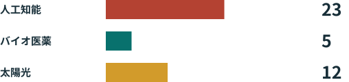

技術の新しい国境¶
中国の公告第48号、米国のAI輸出管理、そして中国の公開モデルの将来を図と平易な言葉で読む本。

調査版：2026年11月2日。 実施中の義務、提案段階の措置、私たちの分析を分けて説明します。個別取引の許可を判断する本ではありません。
二つの国、異なる関門¶
中国：登録は開始、目録改定は意見募集。 10月16日の公告はAI23項目、バイオ医薬5項目、太陽光12項目の計40技術を対象にします。輸出禁止14項目、制限26項目を提案しています。対象輸出の事前登録は同日開始で、開始済みでも未完了の輸出を含みます。意見募集は2026年11月15日までです。CN48 CNQA
米国：半導体管理は実施中、モデル規則は条文と運用の区別が必要。 高性能AI半導体には許可、仕向地、購入者、用途の確認が必要です。2026年1月15日以降、条件を満たすH200などの米国から中国・マカオへの輸出は個別審査が可能です。自動承認ではありません。AI拡散規則は公表条文に残る一方、BISは不執行を表明しました。GAOは2026年5月にその手続きを問題としました。US26 EAR742 USNE GAO26 EAR774
本書の重要な結論¶
公告は中国の公開モデルを一律に禁止していません。案はオープンソースや論文で既に公知となったAI技術を対象外とし、制限技術の新たな公開輸出には自動許可などの便宜を示します。対象外と許可手続きは別です。他の法律まで消えるわけではありません。CN48 CN-A1 CNQA
本書には10章、40項目の索引、対話型の事例と7言語のPDFがあります。公式添付はWPS形式で、PDFは現地変換した閲覧用です。元からあるchina_export_control.pdfはオルガノイド研究の別の資料で、根拠に使いません。